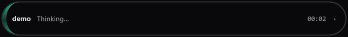
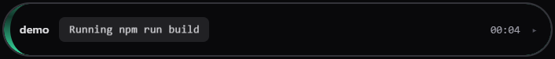
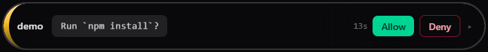
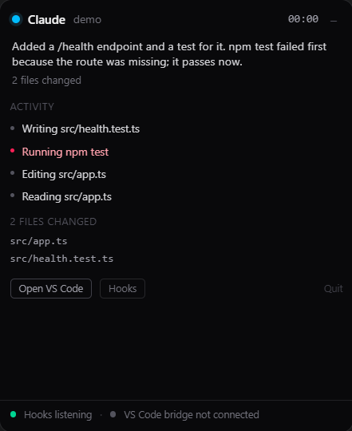
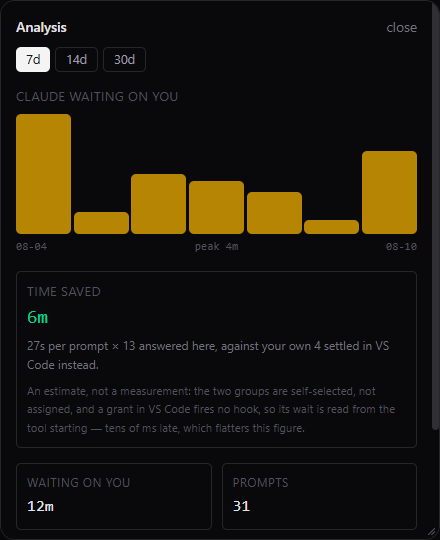

Installer
Start-menu and desktop shortcuts, per-user, no admin rights needed.
You hand Claude Code a task and switch to Chrome. Now you are blind. Still working? Finished four minutes ago? Or sitting on a permission prompt, waiting for a click you don't know it needs? Sidelong puts the answer at the edge of your screen.
↑ a live replica — the real thing is 560×56 and never resizes itself
Download
Built by GitHub Actions from a tagged commit, after passing the test suite on Ubuntu, Windows and macOS. No account, no API key, nothing to configure before it runs.
Start-menu and desktop shortcuts, per-user, no admin rights needed.
One file. Run it from anywhere, leaves nothing behind but its config.
The binaries are unsigned. A code-signing certificate costs
hundreds a year, so Windows SmartScreen will say “Windows protected your PC” the first
time — choose More info → Run anyway. If you would rather not trust a
stranger's binary, the whole thing builds from source with
npm install && npm run build, and every release is produced by a
public workflow you can read.
01 — The problem
No taskbar flash. No notification. Claude Code just quietly stops and waits, and you find out whenever you next happen to look. Multiply that by a dozen times a day and it is the single most expensive thing about working with an agent in another window.
That one state is what this tool is optimised around. Everything else — activity, files changed, errors, completion — is the same signal put to work.
Claude Code only — and the reason is transport, not events. Codex and Gemini CLI both have hook systems with strikingly similar event names, but both run local commands only and talk over stdin/stdout. Claude Code is currently the only one that can POST a hook event to an HTTP URL, and Sidelong's receiver is HTTP — so nothing from them ever arrives. Tested against Codex: it does not work.
Why not just read it from the VS Code API? Because it cannot be done. The Extension API cannot see inside another extension, terminal scrollback is not readable through any supported API, and screen scraping breaks on every UI change. Claude Code ships hooks for exactly this purpose. That is the entire design.
02 — What you actually see
Every line below is produced by a hook event Claude Code actually fired. Nothing is inferred from a timer, and no filename or command is ever invented — if the target can't be determined, it says so instead of guessing.




Claude's own summary line, the activity timeline with the failed npm test
in red, the files it changed, and a connection row that distinguishes
"bridge disconnected" from "no agent session" —
different problems with different fixes.
A session blocked on permission always wins the bar, even if another session is chattier. That is the one thing you must not miss.
03 — What you get
“Run npm install?” — the real command from the tool input, never a vague “needs permission”.
Reading, editing, running, thinking — with the real file and the real command.
Rate limited · overloaded · billing · auth — the true error class, not “something failed”.
Every session tracked separately. A blocked one always takes the bar.
With the VS Code bridge, notifications stay quiet while VS Code has focus.
Hook failures are non-blocking by design. Kill the app mid-run and Claude Code doesn't notice.
Answer a prompt from the bar. Off by default — silence never approves, and every other path falls back to VS Code's own prompt.
Open VS Code is a button on the notification itself, so you skip the overlay.
Totals how long Claude actually sat blocked on you today. Nothing else can measure it.
04 — How it works
Claude Code hooks POST lifecycle events to a local endpoint. A pure
(state, event) → state reducer turns them into what you see. No I/O, no
timers, no Date.now() inside it — which is why the same fixture stream always
produces the same state sequence, and why it is the part that gets tested.
Claude Code (terminal · IDE · desktop · web)
│ hooks: HTTP POST → 127.0.0.1:47821
▼
HTTP ingest ──▶ reduce(state, event) ──▶ buildView() ──▶ the bar
204 first, pure · testable one place renders only
then process severity lives what it's given
▲
│ WebSocket (optional)
VS Code bridge — workspace · focus · active file · diagnosticsThe renderer holds no agent state and the preload exposes no channel that can set a status. Resize, focus, quit, acknowledge, install hooks — that is the entire API surface.
Hook payloads carry whole file contents. Truncation happens inside the reducer, before anything crosses into the UI. Nothing is logged, nothing is sent anywhere.
05 — Analysis
Analysis in the expanded card opens a panel with a 7 / 14 / 30 day
filter, a bar per day of how long Claude spent blocked on you, totals for prompts, tool calls
and turns — and one estimate: time saved. Everything is a tally of hook events
that actually arrived, kept 30 days on your machine and sent nowhere.

There is no way to observe what your day would have looked like without the overlay, so the app doesn't guess at one. It compares two things it can both measure: your own prompts, split by how they were resolved.
A prompt i arrives at aᵢ and resolves at rᵢ, so its wait
is wᵢ = rᵢ − aᵢ. It only enters the data once it has outlived the
700 ms grace window — below that it was auto-approved and never reached
you.
| Group | How it was resolved | How rᵢ is known |
|---|---|---|
| B | You clicked Allow or Deny on the bar | The instant of the click — exact |
| V | You answered in VS Code or the terminal | When the prompt cleared, i.e. the tool started |
w̄_B = Σw_B / n_B # mean wait when you answered here
w̄_V = Σw_V / n_V # mean wait when you answered in VS Code
Δ = w̄_V − w̄_B # saving per prompt
S = Δ × n_B # total saved over the range
The panel shows nothing at all unless there are at least 3 samples in each
group, and nothing if Δ ≤ 0. A difference of means from one sample each is noise
with a decimal point, and a negative result means the bar wasn't faster — which is worth
knowing and not worth dressing up.
This is an estimate, and here is exactly how it's biased. The two groups are self-selected, not assigned — you answer on the bar when you happen to see it and in VS Code when you were already sitting there. Prompts you miss entirely land in V and sit a long time, pushing it up; prompts you catch because you were already in the editor also land in V and resolve fast, pushing it down. The net direction is unknown; this is an observational comparison, not a trial. Separately, granting permission fires no hook — measured — so V's wait is read from the tool starting, tens of milliseconds late, which inflates the figure in the app's own favour. The panel says so on screen.
The app's own timings, against a live Claude Code session. Read them as order-of-magnitude, not as a benchmark: each is a single manual measurement on one Windows 11 machine — n=1, with no distribution behind it. They are in a table because that is readable, not because a suite produced them.
| What | Measured |
|---|---|
Non-permission event → 204 | 81 ms |
Allow clicked → 200 with the decision body | immediate, exact payload |
No click → hold lapses to an empty 204 | 15.0 s (the configured window) |
| A newer prompt supersedes an older hold | 2.8 s |
| 11 hooks pointed at a dead server → tool calls | 39 ms / 67 ms |
Not measurements — arithmetic, so the number the panel eventually shows has a shape you already
recognise. S = Δ × n_B, shown per day and per five-day week.
| Δ per prompt | 3 prompts/day | 10 prompts/day | 25 prompts/day |
|---|---|---|---|
| 5 s | 15 s · 1m15 /wk | 50 s · 4m10 /wk | 2m05 · 10m25 /wk |
| 15 s | 45 s · 3m45 /wk | 2m30 · 12m30 /wk | 6m15 · 31m15 /wk |
| 30 s | 1m30 · 7m30 /wk | 5m · 25m /wk | 12m30 · 62m30 /wk |
| 60 s | 3m · 15m /wk | 10m · 50m /wk | 25m · 125m /wk |
| 120 s | 6m · 30m /wk | 20m · 100m /wk | 50m · 250m /wk |
Time saved needs permission decisions enabled — without Allow/Deny there is no B group to compare against, and the panel says so rather than showing a zero.
06 — Quick start
npm install && npm run build
npm start # launch the bar
node tools/install-hooks.mjs install # wire up Claude Code
node tools/install-hooks.mjs status # confirmThen run /hooks inside Claude Code to see the entries. Full walkthrough,
including the VS Code bridge and troubleshooting, on the
installation page.
Launching from a terminal inside VS Code? VS Code sets
ELECTRON_RUN_AS_NODE=1, which makes Electron behave as plain Node — the app
silently fails to open a window. Unset it first.
07 — Limits
A limitation documented is worth more than a capability faked. The full ledger classifies every claim as supported, partially supported, or impossible — with its failure mode.
| no | Detect the moment you approve. Permission grants are silent — no hook fires. The earliest hard evidence is the tool finishing. |
| no | Read Claude's thinking. Nothing fires during inference. A long silence dims the bar; it never re-labels it. |
| part | Test results. Inferring “tests passed” from an exit code is a guess, so it isn't made. |
| yes | Everything above — session lifecycle, tool activity with real targets, permission detection, typed errors, file tracking. |